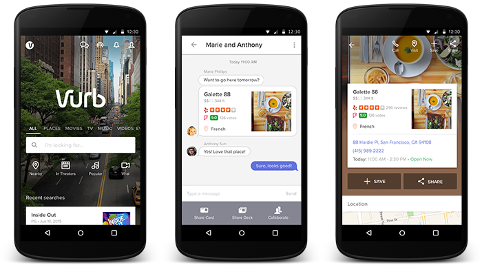

One of SVI’s largest recent development projects, the Vurb Android app, finally launched on Google PlayStore last August 20.
Our cross continental teams in San Francisco, California, Manila, Philippines and Kiev, Ukraine are proud to have worked with the brilliant folks at Vurb to bring their product to the Android market.
Vurb is a mobile search engine that pulls together information and services from popular apps such as Yelp and Metacritic into a streamline, all-in-one-place experience. For example, you can plan an entire night out -- from searching for a restaurant, to making reservations, to buying movie tickets, to booking your Uber -- all from Vurb.
“There are too many apps. 1.5 million of them. 25% are never opened. There are things that shouldn’t be apps. They’re one-time-use functions,” Vurb founder Bobby Lo told TechCrunch. When the iOS version of the app first launched in February 2015, TechCrunch also called Vurb “crazy enough to fight Google” for their vision that “the future of mobile lies in uniting fragmented functionality from across the app ecosystem into a centralized hub.”
In late 2014, the Vurb team was looking for a way to bring the great product they already had on iOS to the bigger Android market. The project would be a formidable engineering challenge, given the app’s complex functionalities that included contextualized search across multiple verticals, the integration of information and services from dozens of other applications, as well as social networking and chat.
Vurb tapped SVI’s global engineering team for the job. Over half a million lines of code later, Vurb Android came to be. After just three weeks since its launch, the app now has more than doubled Vurb's addressable mobile market and continues to grow its user base. We’re excited to see how this app makes mobile search a more streamlined experience for its users and grows as what reporters have called the "WeChat of North America."